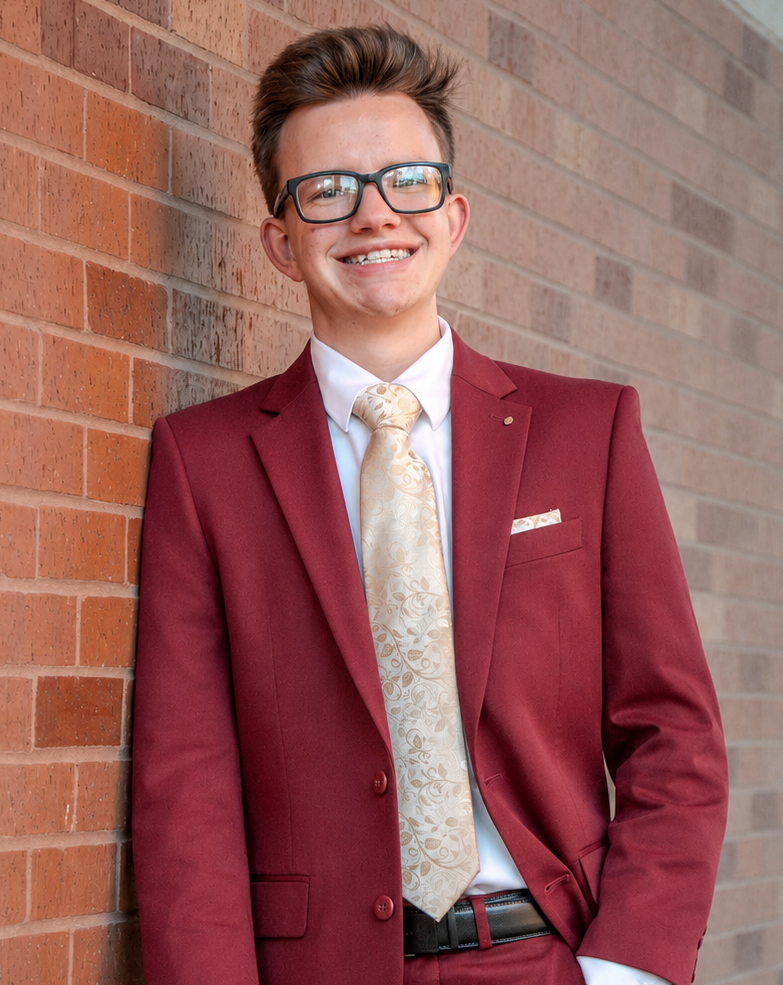

LLM-Based Binary Similarity Research
Investigating whether large language models can evaluate similarity between binaries using HLIL generated from Binary Ninja.
AI Security · Cybersecurity Engineering
Computer scientist focused on securing AI systems, understanding complex software behavior, and building resilient infrastructure for emerging technologies.

About
I recently graduated summa cum laude with a B.S. in Computer Science from the University of Oklahoma. This fall, I will begin an M.S. in Cybersecurity Engineering at Auburn University. War Eagle!
My work explores how intelligent systems can be evaluated, secured, and safely deployed within complex technical environments, with interests spanning machine learning security, autonomous systems, and resilient cyber infrastructure, especially as these systems become increasingly embedded in everyday life.
Selected Work
Investigating whether large language models can evaluate similarity between binaries using HLIL generated from Binary Ninja.
Built a Docker-based CVAT annotation pipeline with model-assisted labeling workflows for autonomous driving datasets.
Developed a secure messaging prototype that paired encrypted socket transport with peer authentication, key exchange, and a GUI for comparing plaintext and ciphertext behavior.
Beyond the Lab
My experiences in extracurriculars and large-scale leadership roles developed my leadership and communication skills, as well as my people-first mindset.